LED Chaser
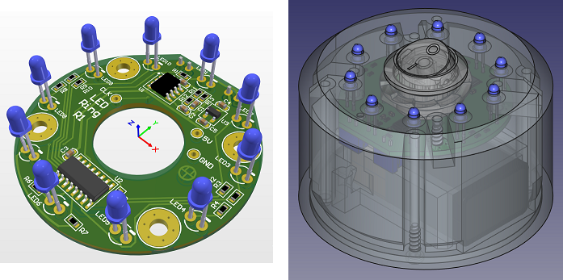
This was the very first personal project I built, back in university. Now that I have more experience, I thought it would be fun to redo it.
First Version (2012)
I think I found the schematic online, bought the parts, and just started building without fully planning it out. The schematic has, unfortunatly, been lost to time.
Here's a video of it working: Demo Video
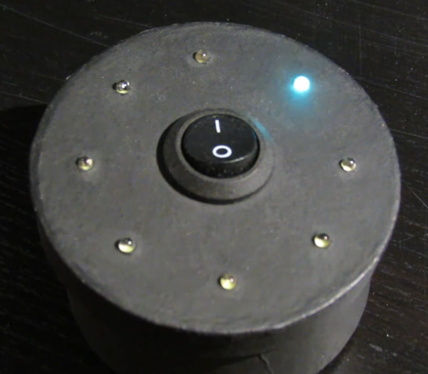
The enclosure was a small cardboard box from an art store I painted black.
It was also slightly too small. I could never close it fully.
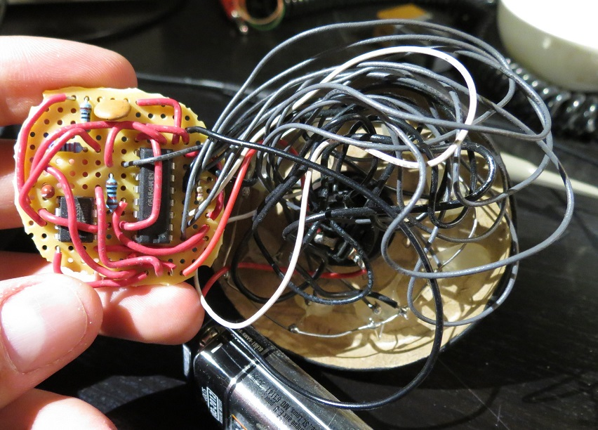
I don't think I used series resistors for the LEDs.
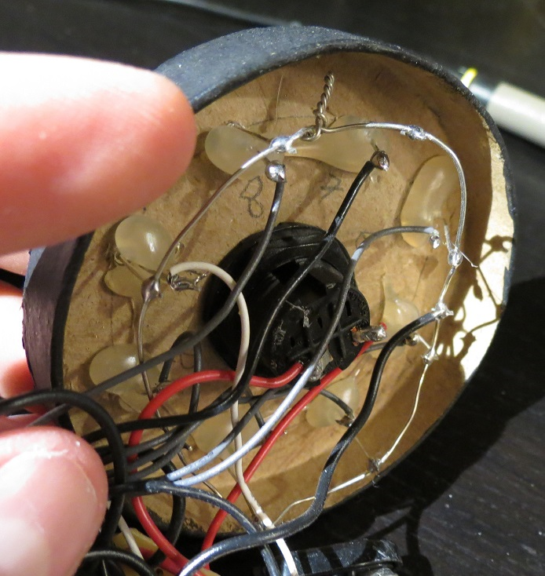
Common ground wire ring grounded each negative LED pin.
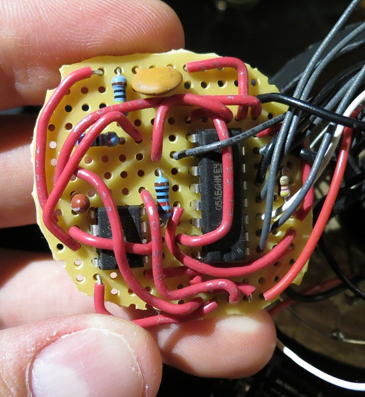
Zero planning was put into the wiring.
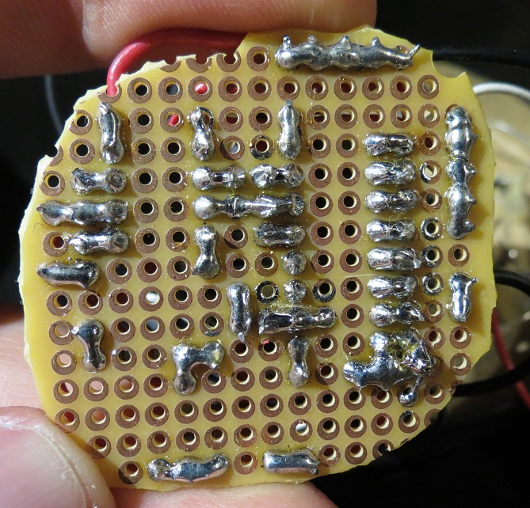
The soldering is pretty passable for a novice.
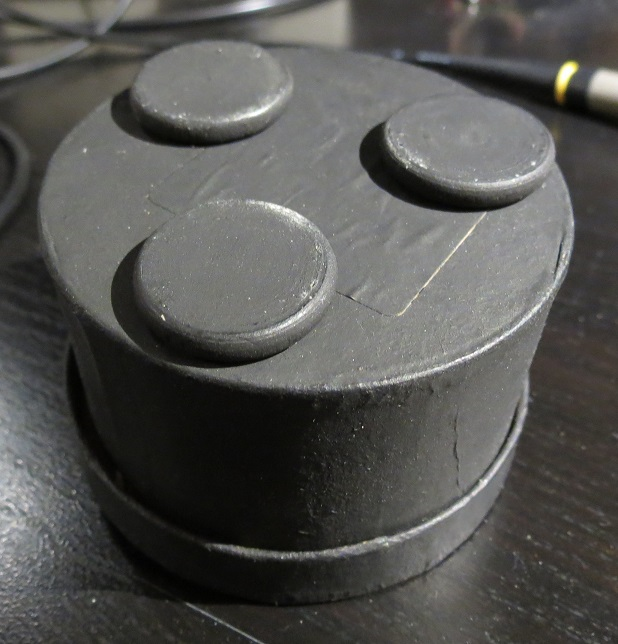
Second Version (2026)
Schematic
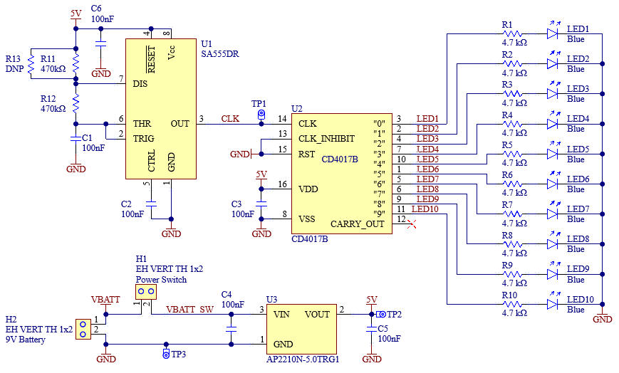
An astable 555 timer produces a clock for a CD4017, which directly drives the LEDs. A linear regulator provides a 5V rail.
I chose the timer component values to give an LED cycle time of roughly 1 second, but due to component variance and not wanting to fine tune each device, they're all slightly off. R13 was included to make fine tuning somewhat easier.
PCB
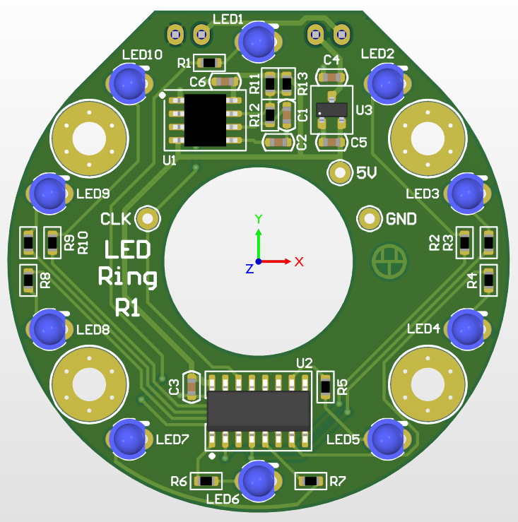
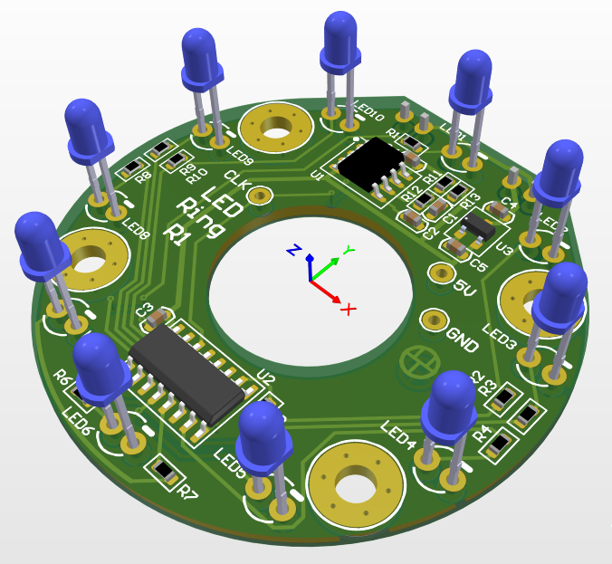
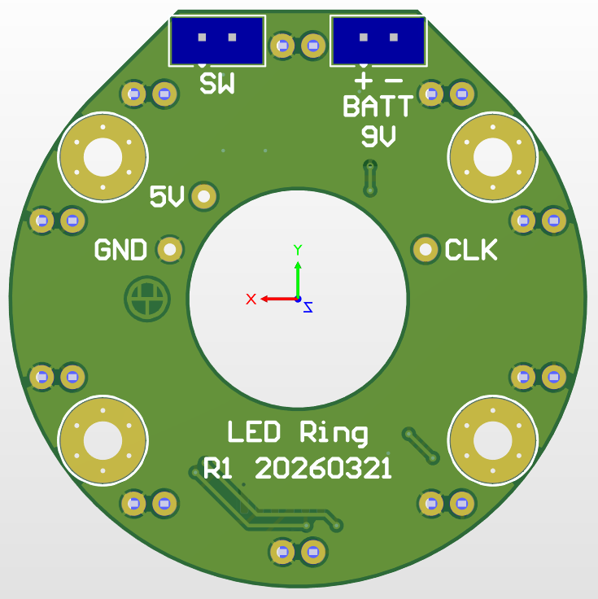
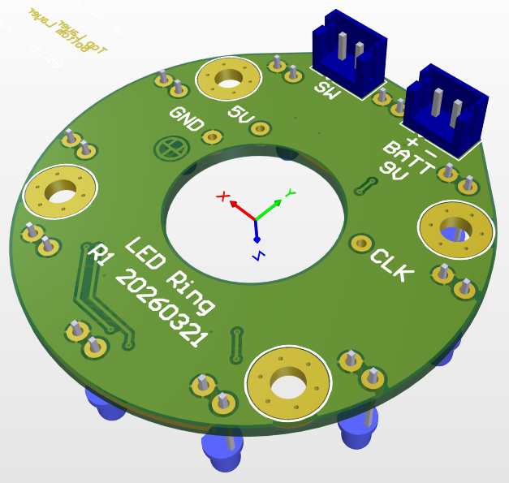
Enclosure
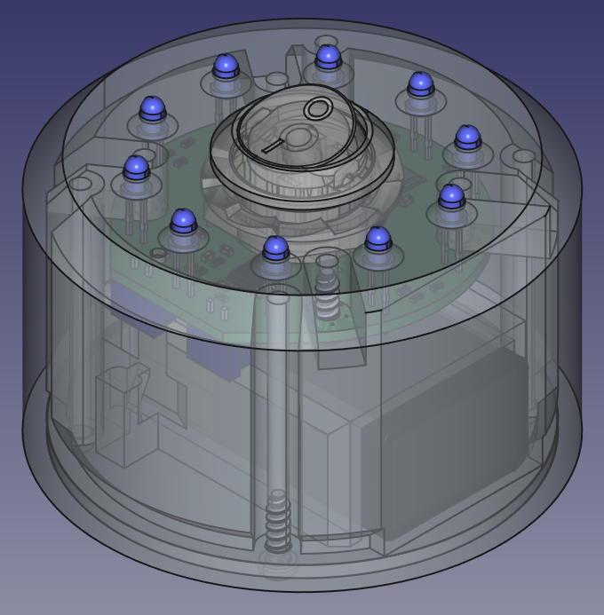
Everything can be printed without supports except the battery holder roof. The holes the LEDs go into are chamfered to help guide them in.
The standoffs weren't large enough for heat set inserts, so I thought I'd try screwing into the PLA plastic directly for the first time. I made a little test piece with holes of decreasing diameter and tried screwing each one until I got a good hold, then used that diameter for the enclosure's holes.
These aren't high mating cycle parts, so the thread shouldn't wear out.
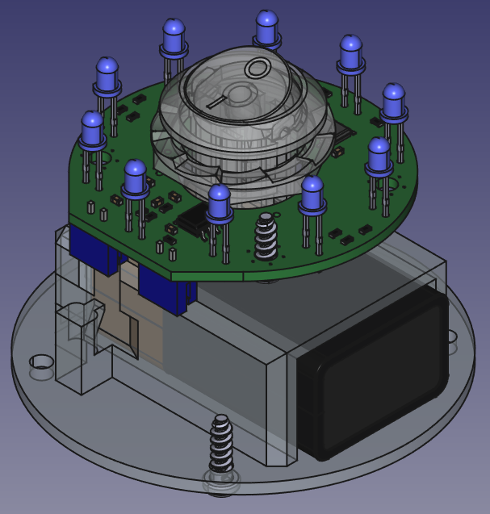
The hole in the PCB lets the switch sit lower, which makes the whole device shorter.
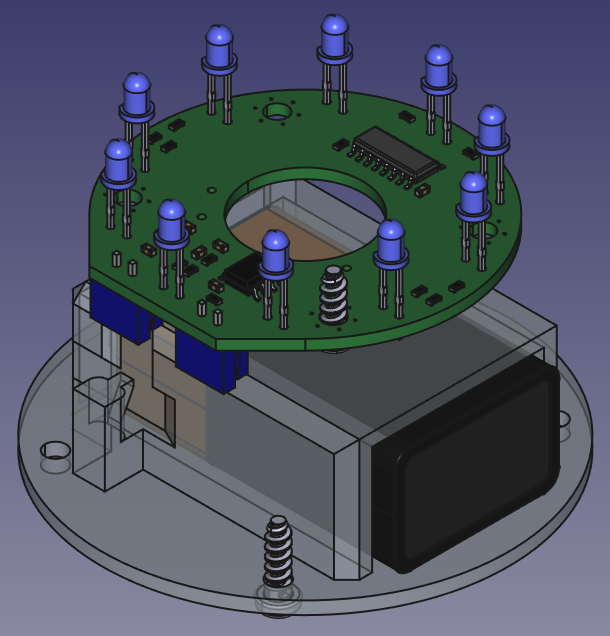
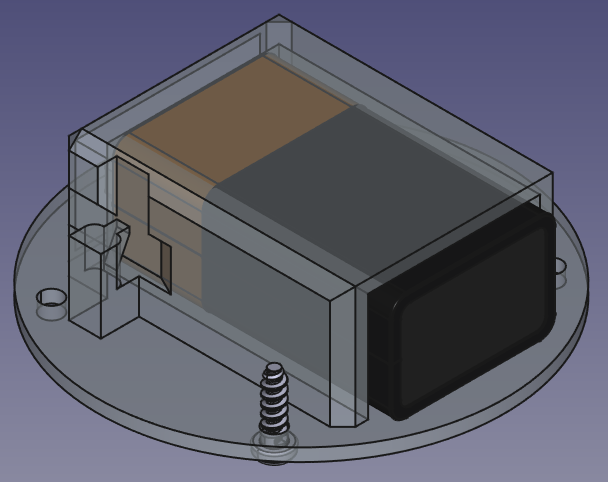
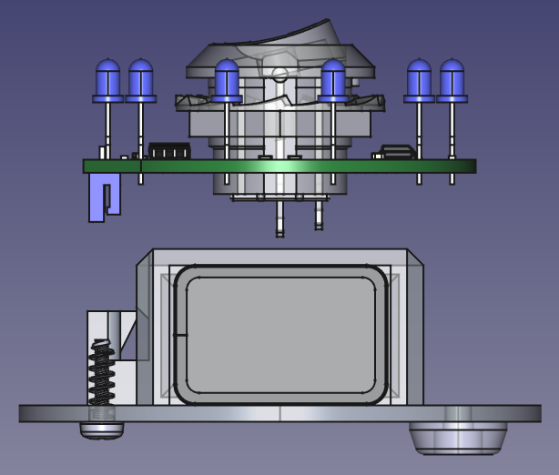
The limit on minimizing the total height was the battery and the switch.
Visable in the bottom right are the little feet I made to stop the screw heads rubbing on the table.
Assembly
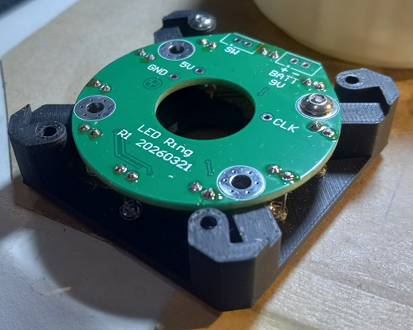
A soldering jig to keep the LEDs at the right height. I just clipped the sides away from the regular enclosure and removed the chamfer around the LED holes.
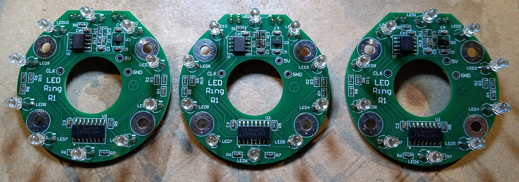
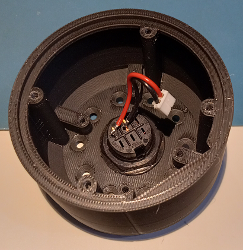
The main assembly issue was that the nut was hard to turn in the tight space. If I had to make a dozen of these I'd probably print a socket of some sort that could accomidate the wires.
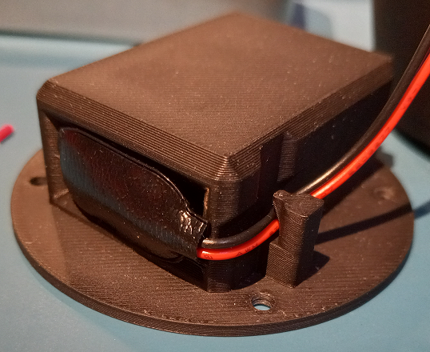
Trying out a cable retention feature that doesn't require supports during printing.
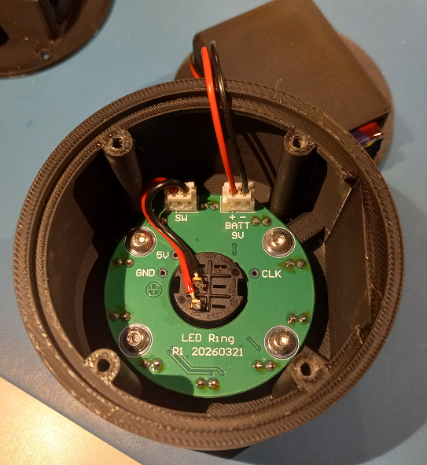
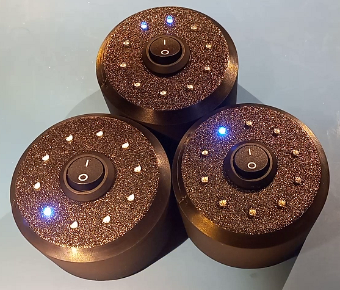
This version is a lot easier to mass produce.

Here's all three working. It's kind of fun to watch them go in and out of phase with each other.
Current draw from the 9 V battery is around 2.3 mA. According to this 9 V battery datasheet, a Duracell Coppertop 9 V battery can last 13.5 days with a constant current draw of 2 mA, so I'd guess the battery would last at least 11 days at 2.3 mA? This is from full charge to 5.5 V, which is the dropout voltage of the linear regulator I'm using.
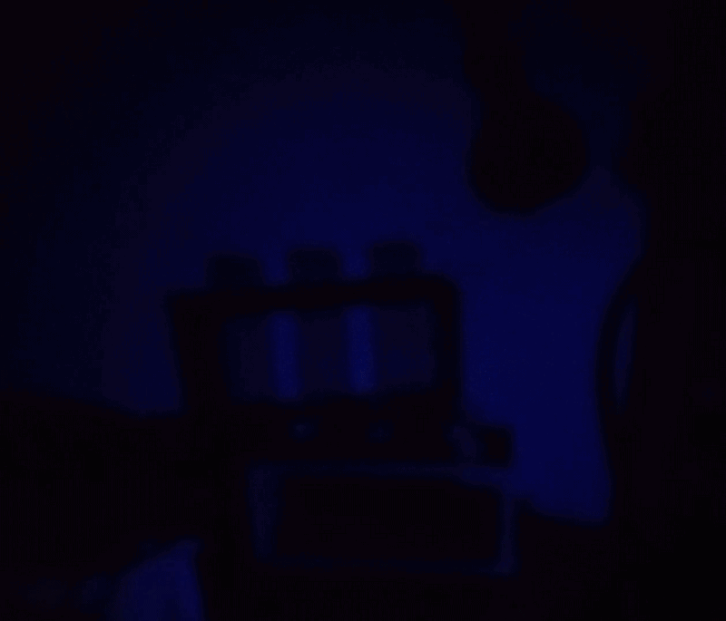
The shadows it casts are kind of fun.
Gifs made from video with
Ezgif.